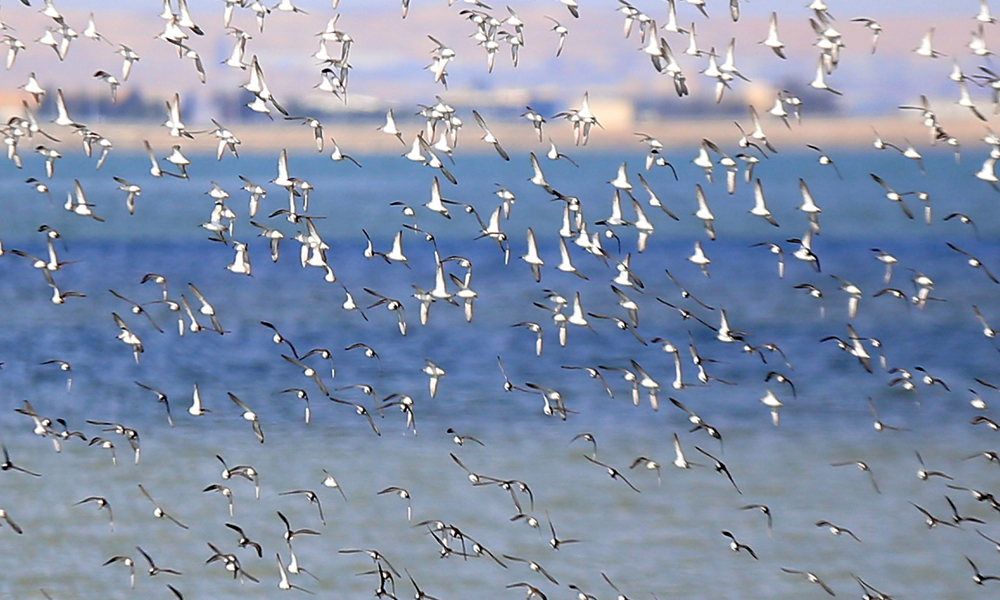

Top Three Things To Do In Jahra

Delicious Street Food
Street food in Jahra is a vibrant and diverse culinary scene, offering an array of delicious and affordable snacks and meals that reflect the city's rich cultural heritage.

Explore the Red Fortress
Red Fortress is an iconic historical monument that was built in the mid 18th century. It is a great place to explore if you are interested in history, architecture, and culture.

Visit Boubyan Island
Boubyan Island is a stunning Island in Northern Kuwait. with exotic birds migrating through Jahra.